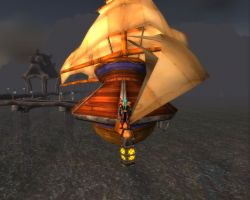

Zephiel
Points : 1

Joué par :
Gambit59
Joué par :
[ Information masquée ]
Age : trop vieux pour s'en rappeler
Lieu de naisance : Sombrevallon
Signe de naissance : Tigre
Sexe : Homme
Race : Elfe
Faction : Alliance
Formation : Chasseur
Niveau : 60
Guilde :
Seigneur de TeldrassilArtisanat 1 : Artisant du cuir
Artisanat 2 : Dépeceur
Informations hrp : WOW est mon premier MMORPG, je suis arrivé sur Kirin Tor pour y rejoindre des amis, et maintenant je pense pouvoir dire que je ne peux plus le quitter, mais s'il vous plait accepté plus facilement les cahsseur dans les instances.
Description : Au debut de ma longue vie j'avais choisi une vie d'ermite, la chasse pour survenir à mes besoins alimentaires et vestimentaires, mais quand mes rare amis mon appelé pour rejoindre les "Seigneurs de Teldrassil", j''ai quitté l'île pour d'ecouvrire le monde et des personnes qui maintenant me son chére, et des villes avec leur charmes comme Stormwind et leur magnifique architecture comme Ironforge, mais j'y ai aussi rencontré des êtres infames et avide de sang comme les "morts vivants", cela ne m'enpéche pas de découvrir chaque jour qu'Elune fait un monde toujours plus beau.